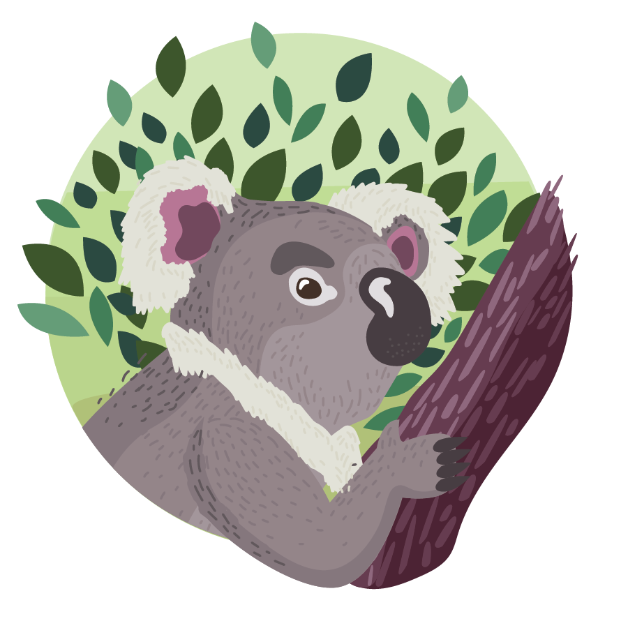

The Great Ocean Road is a 150-mile stretch
of road along the southeastern coast of Australia.
Rather than cutting through hills in a straight line,
this iconic road hugs the curves of the coast and stops
along some of the most beautiful beaches in the world. In
terms of road trips, it doesn’t get any better than this.
There are plenty of itineraries out there, whether you want
to breeze through the trip in a day or spend a week soaking
it all in. Here is a suggested itinerary that would take 2-3
days to complete.

You might recognize this famous surf spot from the 1991 classic “Point Break”. Home to the Rip Curl Pro Surf Class, Bells Beach is ideal for surfers year-round. Don’t know how to surf? No worries, it’s equally fun to watch.
Other things to fo in Bells Beach:
- Relax at Torquay Front Beach
- Visit the Australian National Surfing Museum
- Take a break at Bells Beach Brewing

This seaside town in home to pristine white beaches and a bustling art scene. Perhaps the best thing about Lorne is its proximity to Anglesea, home to even more beaches, and Apollo Bay, which is where you can start the Great Ocean Walk.
Check out these highlights:
- Walk the Rainforest Trail up to Phantom Falls
- Teddy’s Lookout
- Visit St. Anne’s Winery

Although there’s lots of wildlife along the Great Ocean Road, the Koalas spotted along Grey River Road are some of the most famous. You’re sure to see some along the Kennett River Koala Walk, which you can access by parking at Kafe Koala and following signs to the start of the trail. It’s recommended that you walk this trail rather than drive because you are more likely to see koalas!
Please note that you should not feed or try to touch the koalas along this walk.
The Otway LIghtstation is the oldest lighthouse on mainland Australia. It sits atop a grassy cliff overlooking the Brass Strait, a choppy section of sea that claimed hundreds of sailors’ lives before the construction of the lighthouse in 1848. You can even stay overnight in the lighthouse keepers’ cottages.
These iconic limestone stacks are located in Port Cambell National Park, just a short walk from the Great Ocean Road. The name is not totally accurate— really there are only 7 stacks. One collapsed in 2005, and another in 2009.
The best time to visit the 12 Apostles in at sunset, when the sun sinks behind the stacks. Stick around and you may even see the Little Penguins come out on the beach below.
Just a few minutes down the road from the Twelve Apostles sits Loch Ard Gorge— a picturesque beach surrounded by cliffs. This is a good place to see some fascinating geology, hike up to the lookout, or simply sunbathe.